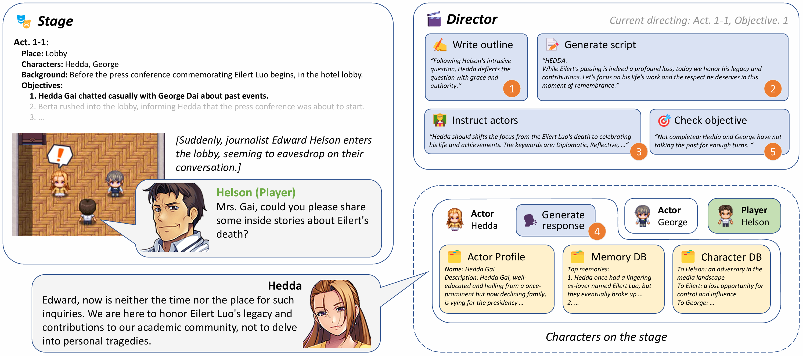
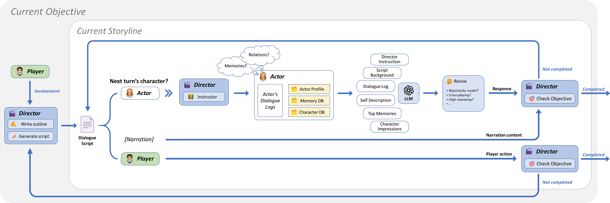
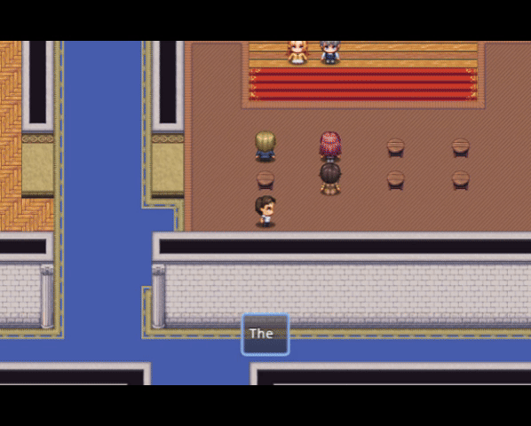

IBSEN: Director-Actor Agent Collaboration for Controllable and Interactive Drama Script Generation
Senyu Han1, Lu Chen1,3, Li-Min
Lin2, Zhengshan Xu2, Kai
Yu1,3
11X-LANCE Lab, Department of Computer Science and Engineering
MoE Key Lab of
Artificial Intelligence, SJTU AI Institute
Shanghai Jiao Tong University, Shanghai,
China 2Department of Cultural Industry Management, School of Media and
Communication
Shanghai Jiao Tong University, Shanghai, China
3Suzhou Laboratory, Suzhou, China
Contact: cnlnpjhsy@sjtu.edu.cn,
chenlusz@sjtu.edu.cn

IBSEN is an LLM-based framework for generating controllable drama scripts with
agent characters. Besides traditional role-playing actor agents, we introduce the director agent
to serve as the centralized component, and instruct actor agents to follow the plot development.
Abstract
Large language models have demonstrated their capabilities in storyline creation and human-like
character role-playing. Current language model agents mainly focus on reasonable behaviors from the
level of individuals, and their behaviors might be hard to constraint on the level of the whole
storyline. In this paper we introduce IBSEN, a director-actor coordinate agent framework that
generates drama scripts and makes the plot played by agents more controllable. The director agent
writes plot outlines that the user desires to see, instructs the actor agents to role-play their
characters, and reschedules the plot when human players participate in the scenario to ensure the
plot is progressing towards the objective. To evaluate the framework, we create a novel drama plot
that involves several actor agents and check the interactions between them under the instruction of
the director agent. Evaluation results show that our framework could generate complete, diverse
drama scripts from only a rough outline of plot objectives, meanwhile maintaining the
characteristics of characters in the drama.
The implementation of the IBSEN framework is largely prompt-based, and one can easily construct
IBSEN agents on any publicly available general LLMs without fine-tuning. We test and evaluate IBSEN
in a drama scenario, meanwhile its framework design could be expanded to broader application cases,
especially agent-based interactive games that contain specialized plot objectives. Demo video above
shows a simple interactive surface implemented by RPG Maker MZ.
Agent Architecture
Director Agent - The central component of IBSEN, drives the whole storyline
towards expected plot objectives.
- Read the script settings, get predefined plot objectives $\langle G_1, G_2, \dots\rangle$
- Write a continuation story outline $S_G$ that adheres to the current $G$
- Translate the outline $S_G$ into detailed dialogue scripts $\langle\hat{T}_1, \hat{T}_2,
\dots\rangle_G$
- For each turn $\hat{T}=(r, \hat{u})$, generate instruction $I=\left\{S_G, Synopsis(\hat{u}),
keywords\right\}$ to hint the actor role $r$ how to respond $u$ that fits the storyline and the
character
- Check whether current objective $G_i$ is completed using the actual dialogue history
$\langle\dots,T_{j-1},T_j\rangle$; move to the next objective $G_{i+1}$ if completed, otherwise
still use the turn $\hat{T}_{j+1}$ generated before
Actor Agent - The distributed component of IBSEN, specifically modified to better
suit the drama role-playing scenario.
- Maintain three databases: Actor Profile $D_P$, Memory Database $D_M$ and Character Database
$D_C$ to store different categories of contents
- Use a first-person narrative monologue to interpret the content stored in the databases from the
perspective and voice of the role-playing character
- Maintain a dialogue log $L=\langle T_1, T_2, \dots\rangle$ as the short-term memory; earlier
dialogue turns will be gradually stored into databases for further retrieval
- Generate the response utterance $u$ using: role characteristics from $D_P$, related top memories
from $D_M$, character impressions from $D_C$, instruction $I$ from director, script background and
dialogue history from $L$
Director-Actor-Player Collaboration

IBSEN also allows human players to participate in the plot and interact with other characters.
Though the player agent is controlled by humans, it can be seen as an actor agent that is not
controlled by the director, and can take any action at any turn of the dialogue.
The director needs to dynamically adjust the plot to accommodate player actions while maintaining
the development of the storyline:
- If no player involvement, still develop the storyline according to the dialogue script generated
before
- Otherwise, always re-generate the current storyline and dialogue scripts, unless the current
plot objective is completed
Evaluations
We create a novel interactive drama adopted from Hedda Gabler for evaluation. Check here to see our drama story settings!

Character relationships in our drama.

Act flow in our drama. Each act is controlled by a director agent to
develop its plot.



- Most of the time, IBSEN follows the route of plot objectives and generates proper storylines,
while maintaining the characteristics in the dialogue.
- New storylines generated by director tend to actively interact with the player.
- Player involvement may influence the behaviors of actors and impact the plot.
- Some common faults occasionally arise: high repetition, too many narrations, overly positive in
some negative events.
- The backbone LLM influences the quality and the moral tendency of the responses.
Discussion
The idea of "controllable plot generation" can be extended to broader scenarios besides traditional
drama. One of the most notable application fields is interactive gaming. For example, in
communication games like script role-playing and table RPG, human players need to communicate with
NPCs or each other to achieve certain tasks. In IBSEN, both the game master and NPCs can be
role-played by AI generative agents, providing players with flexible gaming experiences at any place
or time. As a backend framework, IBSEN can also be implemented in more complicated environments like
video games, where players can deeper immerse in human-like interactions with NPCs through
audio-visual elements. You may take a
try in this video-game interactive demo!
BibTex
@misc{han2024ibsendirectoractoragentcollaboration,
title={IBSEN: Director-Actor Agent Collaboration for Controllable and Interactive Drama Script Generation},
author={Senyu Han and Lu Chen and Li-Min Lin and Zhengshan Xu and Kai Yu},
year={2024},
eprint={2407.01093},
archivePrefix={arXiv},
primaryClass={cs.CL},
url={https://arxiv.org/abs/2407.01093},
}
This website is created by this
Tool.